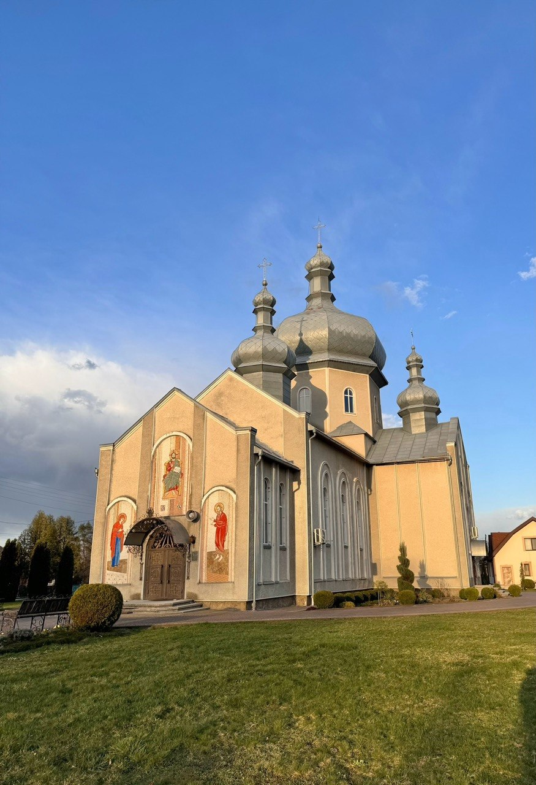

ВОСКРЕСІННЯ ХРИСТОВОГО
Парафія Святого Воскресіння Христового УГКЦ с. Липівка
Історія парафії
Урочище Монастир
Новини
Спільноти
УМХ
Матері в молитві
Вівтарна дружина
Апостольство доброї смерті
Цікаво знати
Контакти
